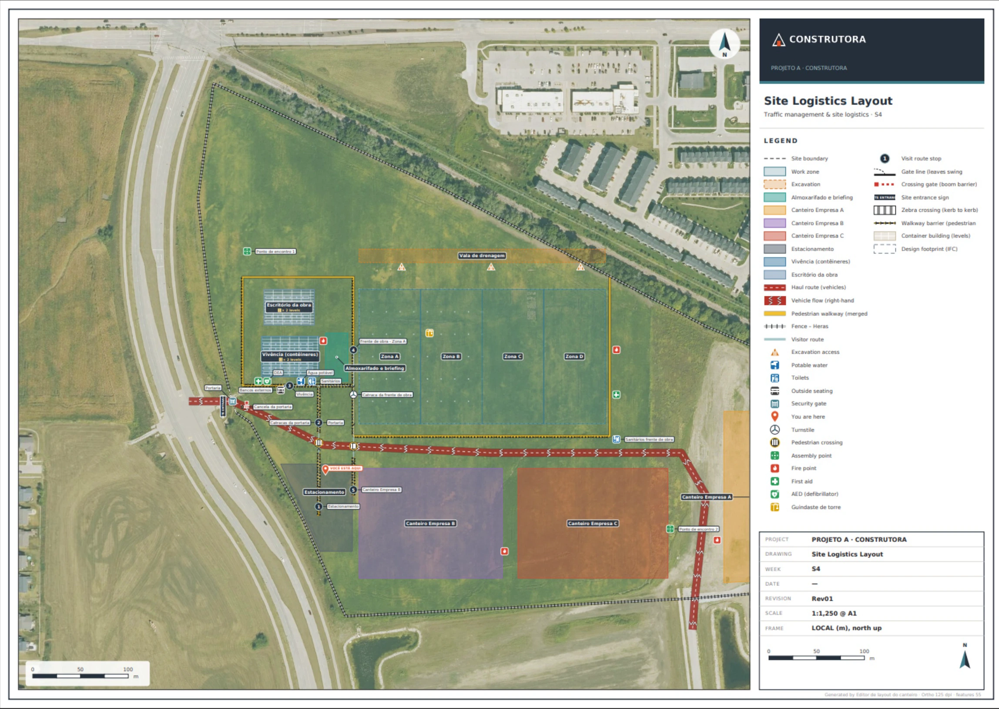
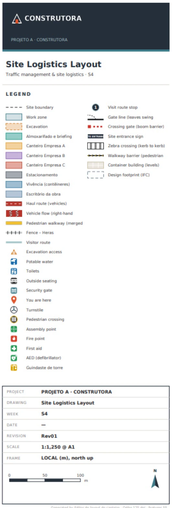

Passo 02 de 04 · Editor de layout do canteiro
Um app pra mexer no layout do canteiro sem redesenhar o PDF
Ele lê o GeoJSON que saiu do passo 1 e a foto aérea na mesma pasta e devolve um app no navegador: guindaste, catracas, passarelas e cercas que você arrasta em cima da foto, filtro por semana e o PDF pronto pra imprimir.
# PEDIDO Faz um appzinho em HTML pra eu mesmo desenhar o layout do canteiro em cima da ortofoto: catracas, passarelas com barreira, áreas reservadas, portões, cercas e guindaste com o raio de giro. Quero arrastar, girar, filtrar por semana e já ver o PDF. # ANTES DE COMEÇAR Precisa de um chat que executa código e grava arquivos (ex.: Claude Code ou Cowork) e de um navegador para testar. Sem execução de código, pare e avise: o app e o 3D saem de script, e app que ninguém abriu não é entregue. O app carrega as bibliotecas de mapa e de PDF (Leaflet, Geoman, jsPDF, pdf-lib, JSTS) pela internet (CDN). Se o navegador bloquear algo aberto com dois cliques, rode python -m http.server 8000 na pasta e abra pelo endereço local. Sem internet onde o app vai rodar: baixe essas bibliotecas para uma pasta lib/ ao lado do HTML e aponte o HTML para elas (abrindo com o http.server, se preciso). Sem internet e sem cópia local, o app não abre: registre isso em pendencias.md e me avise. Ele continua o comando do canteiro 3D. Use a mesma pasta de saída: [PASTA — ex.: ./canteiro]. # ENTRADA - features.geojson: saída do comando 1, em metros locais (X leste, Y norte), uma feição por elemento, com id, name, layer, kind, week e os campos do tipo (width_m, barrier_side, barrier_type, direction, purpose, levels, radius_m, height_m, rotation_deg, stop_no, target). É a fonte única: o app lê e devolve esse mesmo arquivo, no mesmo esquema. O Export mantém as chaves do meta e das properties e pode acrescentar as suas (ex.: data da edição); nunca apaga. - ortofoto.jpg, na mesma pasta: meta.ortho dá o nome, meta.gsd_m os metros por pixel e meta.ortho_bbox_m o retângulo [xmin, ymin, xmax, ymax] que a foto cobre. - pendencias.md: o acumulado do comando 1. Sem o comando 1: comece de um features.geojson vazio sobre a foto aérea, gravando meta.gsd_m e meta.ortho_bbox_m a partir da escala informada aqui: [ESCALA DA FOTO — ex.: 0,25 m por pixel, ou "o portão de veículos tem 6 m"]. Sem escala, pergunte antes de desenhar. Padrões do canteiro, se houver: [PADRÕES — ex.: passarela de 2 m, via de 7,3 m mão dupla, cerca de 2 m]. Idioma dos rótulos da interface: [IDIOMA — ex.: português]. # TAREFA Gere com work/gerar_editor_layout.py (na mesma pasta work do comando 1) um editor_layout.html com o features.geojson e a ortofoto embutidos (planta, norte para cima). 1. Catálogo por camada, com os campos de cada tipo: catraca (quantidade); portão (tipo, largura); portaria com o lado da placa de entrada; cancela como elemento separado, antes do portão, para o veículo não bater nele; cerca (tipo, altura); passarela (largura; barreira nenhuma, à esquerda, à direita ou nos dois lados; tipo de barreira); faixa de pedestres; via de caminhões (largura, mão única ou dupla); área reservada (finalidade: estoque, equipamentos, exclusão, estacionamento); vivência e canteiro com o número de níveis de contêiner; zona de trabalho; escavação e acesso à escavação; ponto de incêndio, primeiros socorros, DEA, ponto de encontro; água potável, sanitários, área de fumantes, bancos, lixeiras; placa com texto; limite de velocidade; kit de derrame, gerador, abastecimento; "você está aqui" editável; rota de visita e parada (número e alvo); guindaste de torre com raio de giro, altura e rotação. 2. Edição: selecionar, arrastar, girar pela alça (Shift = passos de 15°), desfazer e refazer, snap. 3. Passarelas que se cruzam se fundem sozinhas, inclusive com larguras diferentes, sem trecho deslocado da borda. A barreira segue a borda externa da superfície fundida: nada de barreira no meio do cruzamento, e abertura nos cruzamentos, catracas e portões. 4. Faixa de pedestres cobre a via de lado a lado, pela largura da via mapeada. 5. Guindaste: o círculo do raio de giro e a área de exclusão acompanham quando eu arrasto o guindaste ou mudo o raio. 6. Semana: cada item tem semana; um controle no topo mostra só o que tem semana menor ou igual à escolhida. 7. Preview da simbologia como vai sair no PDF. 8. PDF: pré-visualização dentro do app e exportação em A4, A3 ou A1, retrato ou paisagem, recorte retangular da vista, escala automática ou manual (ex.: 1:1750), título, revisão, legenda, símbolos com tamanho automático pela escala, rótulo na área e não no ícone. Opção de markups editáveis no Bluebeam: cada elemento vira um markup com o tipo no Subject, em camadas do PDF, com a escala de medição gravada no PDF (para medir no editor de PDF); a legenda também editável. 9. Import e Export GeoJSON. O Export grava features.geojson no mesmo esquema, com áreas e comprimentos recalculados. O rascunho no navegador não vale: vale o arquivo exportado. 10. Painel de validação com avisos: id repetido, nome vazio, item sem semana, faixa fora de via mapeada, cancela fora da via, área ou item sobre a via, placa e cancela a menos de 2 m. 11. O 3D muda junto assim: salve o features.geojson exportado por cima do anterior e rode de novo work/gerar_canteiro_3d.py do comando 1 para regerar o canteiro_3d.html. Não há 3D dentro do editor. As pranchas e o vídeo (comandos 3 e 4) leem esse mesmo arquivo. # REGRAS - O features.geojson é a fonte. Nada se perde ao salvar: feição ou propriedade que o app não conhece passa intacta pelo Export. Nenhum item é descartado em silêncio. - Medidas em metros. - Item fora da via ou sobre a via vira aviso no painel. Encaixe automático (ex.: cancela no eixo da via) só com aviso visível na tela; nada é corrigido em silêncio. - O app não grava pendencias.md. Quem grava é você, ao gerar o app: cada valor padrão do catálogo que você definiu (largura de passarela e de via, altura de barreira e de cerca, raio e altura do guindaste) entra em pendencias.md como SUPOSIÇÃO até eu confirmar. Dentro do app, o valor padrão fica visível no campo do elemento. - O que não dá para extrair, verificar ou medir na foto entra em pendencias.md com o motivo, sem estimar. - pendencias.md é acumulado: leia, não apague nem renumere, acrescente ao fim com prefixo E- e situação ABERTA, SUPOSIÇÃO ou RESOLVIDA (com data e fonte). # SAÍDA O que você entrega agora, na mesma pasta: - editor_layout.html e work/gerar_editor_layout.py, o script que o gera. - pendencias.md com as entradas E- acrescentadas. O que eu faço depois de editar (e você, se eu pedir): - features.geojson: o mesmo nome, sobrescrito pelo Export (copie o download por cima do anterior). - canteiro_3d.html regerado por work/gerar_canteiro_3d.py a partir do features.geojson novo. O features.geojson é a entrada do comando das pranchas. # CHECAGEM ANTES DE ENTREGAR Abra no navegador e faça. Sem navegador, me passe esta lista para eu fazer: - Desenhe uma passarela cruzando outra de largura diferente: fundiu, a barreira contornou o cruzamento e a opção "nos dois lados" funciona? - Arraste o guindaste e mude o raio: o círculo e a exclusão vieram junto? - Mude a semana: some o que é de semana posterior? - Exporte um PDF A1 com markups, abra num editor de PDF (ex.: Bluebeam) e confira que elementos e legenda se editam e que os rótulos estão nas áreas. - Exporte o GeoJSON, compare o número de feições com o da entrada, rode work/gerar_canteiro_3d.py e veja a mudança no 3D. - O resumo da entrega cita algum número ou recurso que o app não mostra? Se sim, corte.
O que ele resolve
O layout do canteiro muda toda semana, e cada mudança era redesenhar o PDF. A catraca mudou de lugar, o guindaste chegou, a passarela ganhou barreira: abre o desenho, refaz, exporta e manda de novo pra todo mundo.
Aqui você não pede um desenho, pede a ferramenta: um app em cima da foto aérea em que você arrasta o guindaste com o raio de giro e a área de exclusão, muda a catraca, desenha passarela com barreira que se funde sozinha no cruzamento, filtra por semana e tira o PDF até A1, com título, revisão, legenda e markups editáveis no Bluebeam. E ele não decide calado: largura de passarela e de via, altura de barreira e de cerca, raio e altura do guindaste, todo padrão que ele definir vai pro pendencias.md como SUPOSIÇÃO até você confirmar, e encaixe automático só acontece com aviso na tela. O features.geojson é a fonte, nada se perde ao salvar, e é dele que o 3D do passo 1 sai de novo.
O que ele devolve




Saída real · Editor de layout do canteiro · Dados fictícios (PROJETO A)
Macete(ando o apocalipse)
- Esse processo tende a ser mais preciso depois que você configurar as skills e agentes. Te explico como fazer essas coisas na nossa newsletter, o Campo Minado. Só clicar aqui.
- O engenheiro da nova geração é, acima de tudo, responsável. Lembre-se que IA pode cometer erros. Use ela como um facilitador, não como verdade definitiva. O prompt organiza e explicita o cálculo — quem responde pelo número continua sendo você.
- O raio de giro e a área de exclusão são o número que você digita, não o da máquina. Pega a tabela de carga do guindaste que vai de fato pra obra e confere raio e altura no painel antes de liberar circulação embaixo dele.
- Antes de colar, preenche os quatro campos entre colchetes:
[PASTA],[ESCALA DA FOTO],[PADRÕES]e[IDIOMA]; sem o passo 1 e sem escala, ele pergunta antes de desenhar. O PDF sai com a escala de medição gravada, mas ela só vale se a foto estiver na escala certa: abre no editor de PDF (no Bluebeam, por exemplo), mede uma distância que você conhece no terreno e só cota em cima da folha se bater. - O 3D não muda sozinho, e o rascunho no navegador não vale. Exporta o GeoJSON, salva por cima do
features.geojsonanterior, confere se o número de feições bate com o da entrada e só então roda de novo owork/gerar_canteiro_3d.py. - O filtro por semana só mostra o que você marcou em cada item. Item com a semana errada aparece no canteiro antes de existir, então confere a semana de cada catraca, cerca e passarela contra o cronograma antes de mandar o layout pra equipe.
- O app desenha o canteiro, não aprova. Passarela embaixo de guindaste quem libera é a segurança do trabalho, não o navegador, né.
Cada passo usa o canteiro do anterior
Esse é só um dos prompts que uso no meu dia a dia pra ganhar mais tempo livre.
Posto isso e muito mais no Instagram.